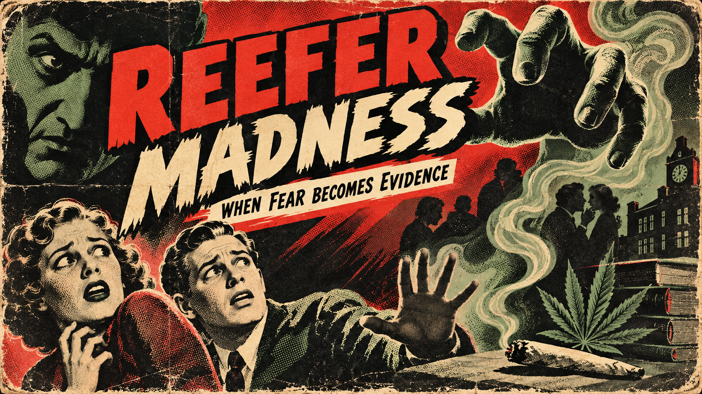
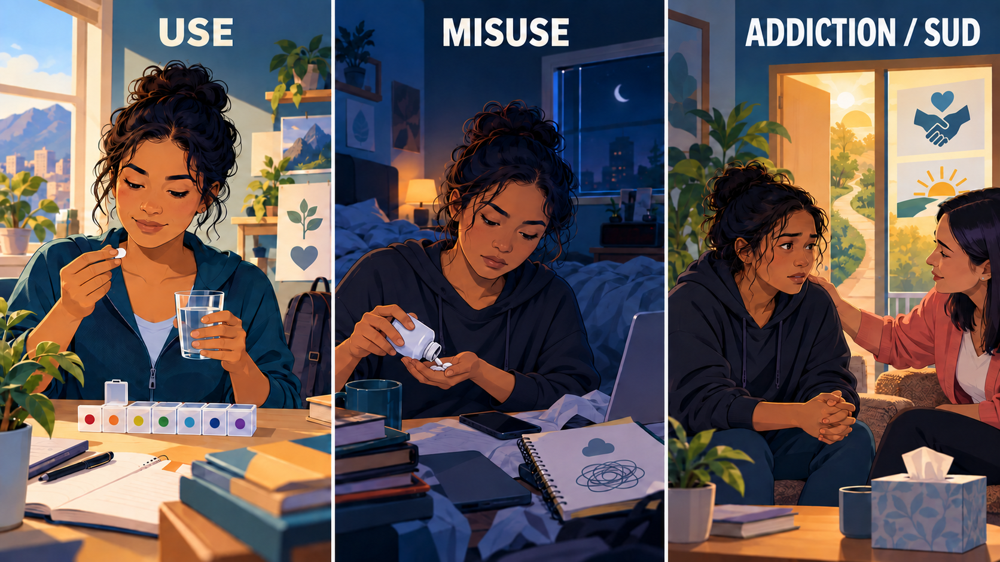
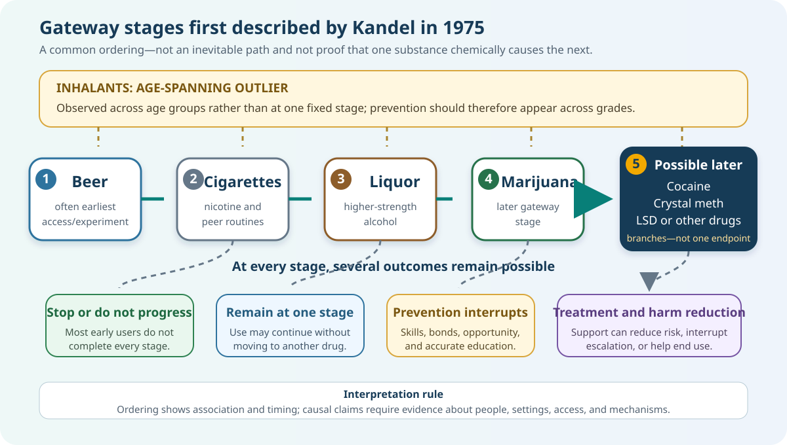

SOC-245 ·
Beyond the Substance: Understanding Drugs in Culture &
Society
· All Sections
Section 1: What Is a Drug?
A chemical can change the body. Society decides what that change
means—and what should happen next.
Essential question: Who gets to define a drug?Interactive chapterUpdated September 2026
Opening story · When fear becomes evidence
1.1Reefer Madness and
the Validity of the Message

This original course illustration reproduces the alarmist visual
language of the period without copying an existing film poster.
The 1936 film now known as Reefer Madness portrayed marijuana
as a rapid route to madness, violence, sexual danger, and death. Its
melodrama did not measure typical cannabis effects. It gave viewers a
frightening story whose emotional certainty could be mistaken for
scientific evidence.
The sociological study of drugs must therefore evaluate both the
content and the
validity of the message. Who created it? Which cases
were selected? What comparison group is missing? Does the evidence
establish prevalence or causation? Which population is shown as
threatening, and who gains authority if the message is accepted?
The measurable question What effects occur, at
what dose and frequency, for which people, under which conditions,
and compared with which risks or benefits?
The constructed message Which images,
stereotypes, emotions, and group associations make one substance
seem uniquely dangerous and one policy seem inevitable?
Marijuana was increasingly linked in public discourse to Mexican
immigrants after the Mexican Revolution and later to Black jazz
musicians and urban nightlife. Cannabis has real effects and risks,
but racialized stories helped determine which effects received
attention and whose behavior was criminalized. Increased marijuana
visibility after national alcohol Prohibition also gave officials and
moral entrepreneurs a new substance around which to organize concern.
Carry this question through the course: If a claim
about a drug is vivid enough to change law but weak enough to fail an
evidence test, are we regulating the substance—or the group and fear
attached to it?
1.2 Begin with a puzzle
Coffee, nicotine, alcohol, cannabis, prescription pain medication, and
heroin can all affect the body. Yet Americans do not treat them as one
social category. Some are ordinary, some are medicine, some are
regulated by age, and some may bring severe criminal penalties.
Sociological clue: The chemical is real, but its
social meaning is created through culture, institutions, history,
power, and interaction.
By the end, you can…
1Distinguish chemical, legal, and social
definitions.
2Explain why “drug” is a socially
constructed category.
3Apply sociological perspectives to drug
classification.
4Use accurate, person-first language.
Explore
1.3 Is it a drug?
Select an item. Before reading the explanation, decide which
definition you are using: what it does, why it is used, how the law
classifies it, or how society sees it.
Choose an item to uncover why a simple yes-or-no answer can be
misleading.
1.4 One word, three layers
No single definition answers every question. In this course, we will
keep three layers visible at the same time.
1. Body and behavior
A broad scientific lens asks whether a substance changes
physiological or psychological functioning. A
psychoactive substance affects mental processes
such as mood, perception, cognition, alertness, or behavior.
2. Intended use and law
For FDA regulation, intended use matters: a product may be
considered a drug when it is intended to diagnose, cure, mitigate,
treat, or prevent disease, or to affect the body’s structure or
function.
3. Culture and society
People collectively attach meanings to substances. Norms,
medicine, markets, religion, politics, media, and law help
determine whether use is regarded as routine, therapeutic, risky,
deviant, or criminal.
Our working sociological definition: A drug is a
substance whose use can affect the body or behavior and whose
identity, acceptable uses, risks, and consequences are interpreted and
regulated within a particular social context.
This definition does not claim that biology is merely an opinion. It
reminds us that chemical effects and social meanings operate together.
Interactive concept map
1.5 The sociological definition of
a drug
Your original slide makes five connected claims. Select each part of
the map to reveal why it matters.
A drug is both a material substance and a socially defined category.
Select one of the five claims to explore it.
Important: “Socially constructed” does not mean
imaginary, harmless, or biologically unreal. It means that people and
institutions decide which effects matter, which uses are acceptable,
which labels apply, and which responses society will fund or enforce.
1.6 More than a chemical substance
How does the sociological approach differ from an approach centered on
the body? The difference is not that one is correct and the other is
wrong. They operate at different levels of explanation.
Clinical pharmacology
Studies how drugs affect the structure and functioning of the
human body. It investigates mechanisms such as absorption,
distribution, metabolism, receptor activity, therapeutic action,
and toxicity.
Studying cocaine: What biological and
pharmacological factors promote or slow cocaine’s absorption into
the bloodstream?
+
Sociology and social science
Study drugs as more than chemical substances. They examine how
social environments, relationships, culture, institutions,
inequality, law, politics, markets, and shared meanings influence
drug use and society’s response.
Studying cocaine: How do social networks,
employment, neighborhood conditions, cultural meanings, policy,
race, class, and access to treatment shape patterns and
consequences?
The complete picture requires both. Pharmacology can
help explain what enters the bloodstream. Sociology helps explain why
use follows social patterns, why risks and resources are unequal, and
why society responds differently to different substances and people.
Vocabulary bridge: substance, body, behavior, and context
These concepts describe different dimensions of drug experience.
They are not interchangeable, and they do not form an inevitable
ladder from use to addiction.

Use, misuse, and addiction are distinguished by purpose, pattern,
control, risk, and consequences—not by a person's appearance or
moral worth. Treatment and recovery remain possible.
Concept
Working definition
Example
Drug use Behavior
Taking or being exposed to a substance. Use alone does not
establish harm, misuse, dependence, or disorder.
An adult drinks coffee or takes pain medicine exactly as
prescribed.
Drug abuse / misuse Behavior + harm
Use in a way that increases risk, causes harm, or departs
from medical directions. “Abuse” remains common in older
sources; current clinical language generally favors
misuse or a specific diagnosis.
A person takes more prescription medicine than directed or
mixes it with alcohol despite a warning.
Drug addiction / substance use disorder Pattern
A persistent pattern involving impaired control and
continued use despite significant problems. Diagnosis
depends on multiple criteria and severity—not one episode.
A person repeatedly tries to cut down but continues using as
health, work, or relationships deteriorate.
Drug tolerance Body adaptation
A reduced response after repeated exposure, so more may be
needed to produce an effect previously reached with less.
The same amount of alcohol produces less intoxication after
frequent use.
Drug dependence Body adaptation
Physical adaptation that can produce withdrawal when a drug
is reduced or stopped. Dependence can occur during
appropriate medical treatment and is not identical to
addiction.
A patient who abruptly stops a long-term prescribed opioid
develops withdrawal symptoms without having used it
compulsively.
Drug interaction Combination
One substance changes another's action. An interaction may
be intended and therapeutic, or unintended and dangerous.
Naloxone can therapeutically counter opioid effects; alcohol
plus a benzodiazepine can dangerously intensify sedation.
Therapeutic dose Dose
An amount intended to produce clinical benefit with an
acceptable level of risk for a particular patient and
condition.
A clinician adjusts buprenorphine to suppress withdrawal and
craving without excessive sedation.
Effective dose Dose
An amount that produces a specified measurable effect. In
research, ED50 commonly means an effect occurs in 50% of the
studied population—not that it is every person's correct
dose.
Researchers measure the dose at which a defined level of
pain relief occurs.
Lethal dose Dose + toxicity
An amount capable of causing death. LD50 is a population
estimate used in toxicology, not a predictable boundary
between safe and fatal exposure for an individual.
Opioid overdose risk can rise sharply when opioids are
combined with other respiratory depressants.
Route of administration Delivery
How a substance enters the body—such as swallowing,
inhaling, injecting, or absorption through skin—which
influences onset, intensity, duration, and risk.
An injected drug generally reaches the bloodstream faster
than the same drug swallowed in a tablet.
Polydrug use Combination
Using more than one substance at the same time or close
enough together that their effects overlap, intentionally or
unintentionally.
Alcohol and opioids both depress breathing; caffeine may
mask sleepiness from alcohol without reducing impairment.
Do not diagnose from one sign. Tolerance and
dependence may occur without addiction, while addiction can be
present even when dramatic withdrawal is absent. Researchers must
examine the whole pattern, person, substance, and setting.
1.7 Many disciplines, different
questions
Drugs are chemical substances, commodities, medicines, cultural
objects, political issues, historical forces, and features of human
behavior. Each discipline illuminates part of the picture. Sociology
connects those parts by examining patterned social behavior, groups,
institutions, culture, and inequality.
🧪 Clinical pharmacology
Examines what a substance does in the body: absorption,
distribution, metabolism, receptors, dose, interactions,
therapeutic effects, and toxicity.
Cocaine question: How do route and dose affect
absorption, duration, and cardiovascular risk?
🧠 Psychology
Often emphasizes individual cognition, emotion, learning,
motivation, personality, decision-making, and the relationship
between brain and behavior.
Cocaine question: How do reinforcement, craving,
stress, or co-occurring mental-health conditions influence
repeated use?
🏺 Anthropology
Examines substances within culture and everyday life, including
rituals, healing traditions, shared knowledge, symbols, and
adaptation to the environment.
Coca-leaf question: What meanings and social
functions does traditional coca chewing have in Andean
communities?
📜 History
Shows that drug use is not new and that the same substance may be
medicine, consumer product, vice, or crime in different periods.
Historical question: What changed when a
once-accepted ingredient or remedy became restricted?
🏛️ Political science
Studies government, policy, political conflict, public authority,
and the use of power. It can examine regulation, international
relations, enforcement, and competing policy agendas.
Cocaine question: How have trafficking
organizations, state authority, elections, and international
policy influenced one another?
📈 Economics
Examines production, distribution, incentives, prices, labor,
public spending, productivity, legal and illegal markets, and who
bears costs.
Market question: How do prohibition, scarcity,
demand, and enforcement reshape price, purity, profit, and risk?
👥 Sociology
Studies how drug-related behavior is patterned through groups,
networks, culture, institutions, socialization, inequality,
labels, and social control.
Sociological question: Why do rates, meanings,
consequences, and official responses vary across groups and
settings?
🔗
Sociology does not replace the other disciplines.
It asks what becomes invisible when we study only molecules or only
individuals. A full explanation connects pharmacology and psychology
with relationships, communities, institutions, history, culture,
policy, and power.
Match the question
1.8 Who would be most likely to
ask?
Question: How did a substance move from an accepted
medicine to a prohibited drug?
Choose the best starting discipline. More than one discipline may
eventually contribute to a complete explanation.
Reality lens
1.9 Change the context; change the
meaning
Choose a lens to examine the same hypothetical substance: a compound
that reduces pain and can also produce euphoria and dependence.
Select a lens. The chemical properties remain, but the questions—and
often the consequences—change.
Key concept: social construction
Social construction is the process through which
people and institutions create, negotiate, and reinforce shared
meanings. Calling drug classifications socially constructed does not
mean that substances or harms are imaginary. It means
classifications and responses are shaped through social processes.
Key concept: moral entrepreneur
A moral entrepreneur is a person or group that
works to define a condition or behavior as a problem and campaigns
for rules or enforcement. Their concern may identify genuine harm,
but sociologists also examine their evidence, interests, influence,
and proposed response.
1.10 Gateway Theory as a Research
Lesson
In 1975, sociologist Denise Kandel used longitudinal data from New
York high-school students to identify a recurring sequence: beer or
wine; cigarettes or hard liquor; marijuana; and then possible use of
other illicit drugs. Gateway theory is valuable here not because it
predicts every person, but because it demonstrates why researchers
study
timing, sequence, initiation, escalation, maintenance, and
discontinuation.

Ordering is a population-level pattern. It does not prove that one
substance chemically causes the next or that an individual will
complete the sequence.
Instructor research note: In an unpublished thesis,
Caroll Hodgson used regression analysis with data from 2000 to ask
whether evidence consistent with the established sequence could still
be detected. The analysis found an ordering of beer, cigarettes,
liquor, marijuana, and possible later experimentation with substances
including cocaine, methamphetamine, and LSD; inhalants did not fit one
age-graded step. Because the thesis was not published or peer
reviewed, this coursebook treats it as an instructor replication
exercise—not the origin of the theory or definitive evidence.
Explore an age window
This model shows when research-informed education topics may
become more relevant. It does not display prevalence or predict a
student.
Early adolescence
Nicotine, alcohol strength, and changing peer routines
Initiation
Why did one substance appear first? Consider family access,
celebration, advertising, price, peers, perceived risk, and
measurement.
Escalation
What changes between stages? Frequency, desired effects, stress,
opportunity, peers, and illicit-market access may matter.
Maintenance
Reinforcement, withdrawal avoidance, identity, trauma, mental
health, routine, and limited alternatives may sustain use.
Discontinuation
Roles, relationships, education, treatment, harm reduction,
meaningful work, and changing peer networks can interrupt
progression.
Sequence A recurring order can identify when
exposures or transitions tend to occur.
Common causes Shared risks can make several
kinds of use more likely without one drug causing the next.
Social pathway Each stage may change peers,
settings, norms, access, and expectations.
Research limit Most early users do not
complete every stage. “Harder drug” is a cultural label, not a
precise pharmacological category.
Why patterns matter: Good research can identify where
prevention, education, treatment, and harm reduction may help. Good
interpretation also prevents an association from being turned into a
deterministic story or unsupported causal claim.
1.11 Moral entrepreneurs: defining
the threat
A moral entrepreneur is a person, organization, or
institution that works to persuade others that a condition or behavior
threatens important values and that society should respond. Moral
entrepreneurs do more than identify a problem: they help define what
the problem is, who or what causes it, who is harmed, and
which solution appears necessary.
They are not automatically dishonest or harmful.
Moral entrepreneurs may draw attention to serious, neglected dangers.
Sociology asks us to evaluate how their claims are constructed, whose
evidence is included, whose voices are missing, and what consequences
follow.
Anatomy of a drug-related campaign
1. Name the conditionSelect a substance, behavior,
trend, or population and identify it as a matter of concern.
2. Frame the threatExplain what is happening, why
it matters, who is at risk, and what values appear endangered.
3. Establish authorityUse research, lived
experience, professional expertise, statistics, stories, or
institutional status to gain credibility.
4. Mobilize attentionUse media, testimony,
campaigns, organizations, or political action to build public
concern.
5. Demand a responseAdvocate education, treatment,
regulation, enforcement, funding, harm reduction, or another policy.
Objective condition and subjective concern
Objective condition
Evidence that can be examined, such as prevalence, toxicology,
overdose deaths, impaired driving, treatment need, health effects,
family consequences, or economic costs.
Ask: What happened, how often, to whom, compared
with what, and according to which evidence?
+
Subjective concern
The meanings, emotions, values, symbols, and judgments people
attach to the condition—including fear, sympathy, blame, urgency,
or outrage.
Ask: Why is this condition receiving attention
now, and how is the public being encouraged to interpret it?
A social problem contains both dimensions. Evidence of harm does not
automatically determine how society understands the problem or which
response it chooses.
Who may compete to define a drug problem?
News and entertainment mediaSelect stories, images,
sources, and language that can increase or reduce public concern.
Politicians and advocacy groupsConnect drug issues
to campaigns, values, legislation, budgets, or group interests.
Law enforcementContribute expertise about illegal
markets and public safety while advocating particular resources or
enforcement approaches.
Health and treatment professionalsFrame the issue
through prevention, diagnosis, treatment, recovery, public health,
and access to care.
ResearchersDefine measurements, evaluate evidence,
challenge assumptions, and identify what remains uncertain.
IndustriesMay shape definitions through marketing,
lobbying, product claims, risk communication, and commercial
interests.
People directly affectedBring lived experience that
may support, complicate, or challenge official definitions of the
problem.
Definitional ownership, drug scares, and moral panic
Definitional ownership occurs when a person or
institution becomes widely accepted as the legitimate authority on
what the problem means and how it should be handled. Different
institutions may compete for this authority because definitions
influence public attention, policy, professional jurisdiction, and
funding.
A drug scare is a period of heightened concern about
a substance or pattern of use. A moral panic may
develop when claims portray a person, group, or behavior as a major
threat to society and public reaction becomes disproportionate,
simplified, or detached from the best available evidence.
Watch the reasoning: “Some claims were exaggerated”
does not mean “there was no harm.” Likewise, evidence of real harm
does not prove that every frightening claim, stereotype, punishment,
or proposed policy is justified.
Richmond Pearson Hobson: a second moral entrepreneur
In his 1914 speech The Truth About Alcohol, former naval
officer and congressman Richmond Pearson Hobson presented abstinence
as a scientific and moral necessity. Alcohol’s harms were real, but
Hobson used sweeping biological claims and openly racist images of
Black and Indigenous people to portray alcohol as an existential
threat. His campaign demonstrates how genuine harm, selective
evidence, moral certainty, and group prejudice can operate in the same
message.
Manifest goal Reduce drinking, illness, family
hardship, injury, violence, and lost work.
Latent dysfunctions of Prohibition Illegal
production, uncertain potency, organized crime, corruption,
enforcement expense, lost tax revenue, and weakened respect for law.
Your first assignment: your moral-entrepreneur starting point
This is Part One of
From Moral Entrepreneur to Drug Specialist. Choose a drug
and prepare a brief statement and first presentation about what you
currently believe its dangers are and which public response you
initially support. This is a preserved baseline—not your final
conclusion. Clearly label assumptions as initial beliefs and do not
invent evidence.
Name the concern: What drug interests you, and
what do you presently believe is its greatest danger?
Identify the audience: Who do you believe is at
risk, and whom would you try to persuade?
Trace the message: Did your impressions come from
family, peers, school, news, entertainment, social media, personal
observation, or another source?
Choose an initial response: What should society
do, and why does that response currently seem reasonable?
Name your uncertainty: What evidence could
complicate or change your position?
Save the original: Do not rewrite this baseline
later. Your final presentation will show what research confirmed,
challenged, or changed.
1.12 The sociological imagination
changes the question
If we ask only…
Sociology also asks…
What did the substance do to this person?
How did access, stress, peers, work, family, neighborhood, and
policy shape the situation?
Why didn’t the person simply stop?
What biological, psychological, relational, and structural
forces make change difficult or possible?
Is the substance legal?
How and why did its legal classification develop, and who
experiences enforcement?
Is the drug dangerous?
Compared with what, at which dose and route, in which setting,
and according to whose evidence?
Who is responsible?
How are responsibility and resources distributed among
individuals, industries, communities, and governments?
Theory detective
1.13 Three ways to see the same
issue
Choose a perspective to analyze why one psychoactive substance is sold
openly while another is criminalized.
Select a perspective to reveal the questions it would emphasize.
1.14 Words do social work
Language can describe a health condition—or turn a person into a
label. NIDA recommends person-first and medically accurate language
because stigmatizing terms can influence judgment, punishment,
willingness to seek treatment, and hope for recovery.
Prefer
Avoid as a label
Why
Person with a substance use disorder
Addict, junkie, drug abuser
The person is not reduced to a condition.
Substance use or prescription medication misuse
Drug abuse
The wording is more precise and less punitive.
Tested positive or negative
Dirty or clean test
Clinical results are not moral identities.
Person in recovery
Former or reformed addict
Recovery is described without a permanent stigmatizing label.
Check your understanding
1.15 Can you separate chemistry
from classification?
1. Which statement best reflects the sociological
approach?
2. A substance is accepted as medicine when
prescribed but condemned when used outside medicine. What does this
best demonstrate?
3. Which wording follows person-first guidance?
4. Which discipline would most directly examine how
drug policy distributes power and punishment among groups?
1.16 Carry this idea forward
A drug is never only a molecule in this course. We will study the
interaction of
substance + person + setting + society.
Section 2: Drugs Across History
examines how meanings and policies changed across time. A later
section will follow substances through the brain and body.
References
Content reviewed: September 2026. This chapter is
educational and does not provide medical or legal advice. Laws and
official classifications can change.
1.5 The sociological definition of a drug
Your original slide makes five connected claims. Select each part of the map to reveal why it matters.